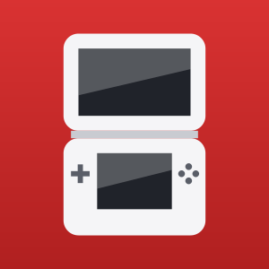

NinDS
Nintendo DS emulator for Android, powered by DSperate
Want to help test NinDS on your Android device?
NinDS is a fast Nintendo DS emulator for Android built on the DSperate core, which pairs an ARM64 recompiler with melonDS-accurate emulation. Point it at a folder of games to build a library with box art, then play with on-screen touch controls, the touchscreen as the DS's bottom screen, or a physical gamepad.
No games, BIOS files, firmware, or commercial artwork are included. Games start without any BIOS dumps thanks to the built-in FreeBIOS; your own legally obtained BIOS and firmware dumps are optional and unlock the DS system menu.
Key Features
- .nds and zipped game support, read straight from the folder you choose
- Game library with an icon view and a box-art view, with art downloaded on demand and kept on device
- ARM64 recompiler (JIT) for full speed on modern phones
- GPU 3D through Vulkan, with up to 8x internal resolution, anti-aliasing and smooth textures
- Screen filters: sharp, smooth, sharp bilinear, LCD grid and xBRZ upscaling
- Stacked, side-by-side, hybrid and single-screen layouts, separately for portrait and landscape
- Save states with thumbnails, plus an automatic resume slot
- Fast forward and frameskip
- Action Replay cheats, typed in or picked from a usrcheat.dat database
- Online play through Wiimmfi (optional)
- On-screen controls with haptics, plus gamepad and keyboard mapping
- Light and dark themes
Device Requirements
- Android 9.0 or newer (API 28+)
- 64-bit ARM (arm64-v8a) device
- OpenGL ES 3.0 GPU; Vulkan 1.1 for GPU 3D and high-resolution 3D
- Your own legally obtained game files
- Optional: your own DS BIOS and firmware dumps for the system menu
Getting Started
- Choose the folder holding your Nintendo DS games.
- Tap a game in the library to play it. Long-press it to resume, or to import and export its save.
- Tap the box-art button in the toolbar to switch the library to covers.
- Open Settings to turn on GPU 3D and pick an internal resolution, or adjust layouts and controls.
- Press Back, or the Home/Guide button on a gamepad, for the in-game menu with save states, cheats and layouts.
A Note on High-Resolution 3D
With GPU 3D on, NinDS draws the DS's 3D scenes at up to eight times the original resolution, then composites them with the 2D layers so menus and sprites stay pixel-exact. Higher resolutions need a stronger GPU: 4x runs at full speed on most recent phones, while 8x is best kept for flagship devices.
License & Credits
NinDS is an Android port of DSperate by Noxwell (beebono), and is distributed under the GNU General Public License v3.0. It is provided without warranty, as described by the license. DSperate is verified against melonDS and reimplements DraStic's techniques in clean-room fashion. FreeBIOS is by Gilead Kutnick. The 6x xBRZ upscaling shader is derived from Kronos and Yabause and is used under GPL-2.0-or-later. Box art and titles come from GameTDB.